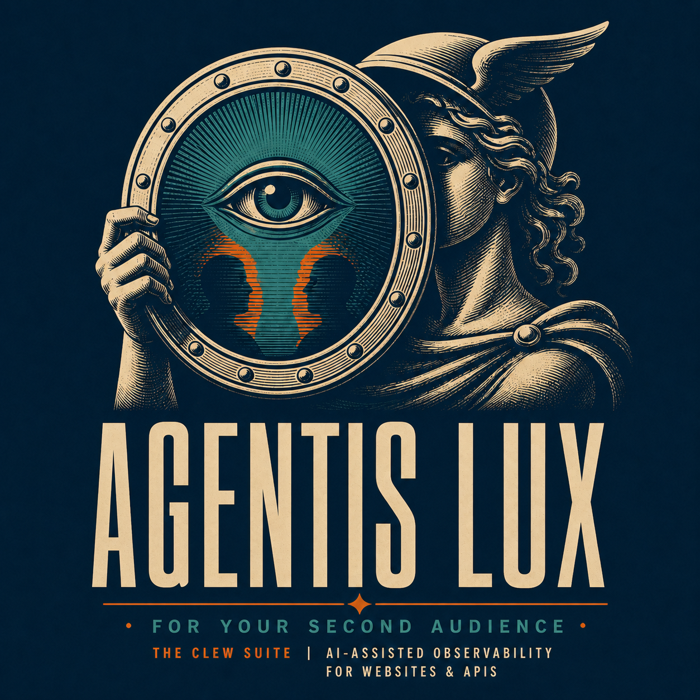
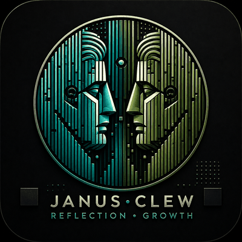
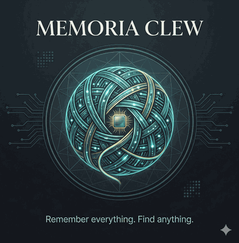
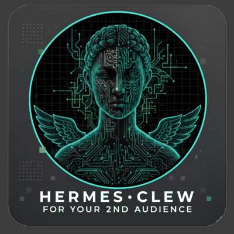
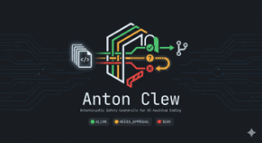
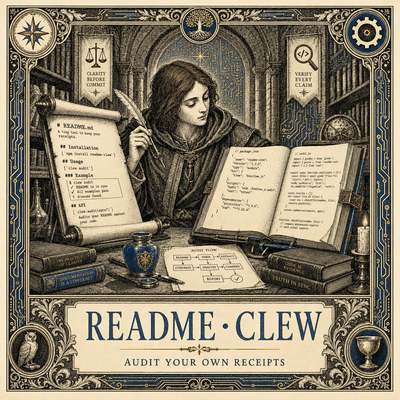
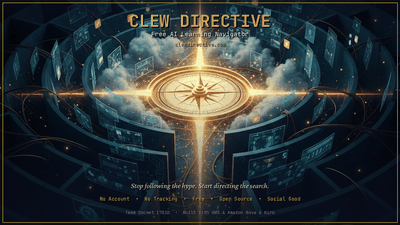
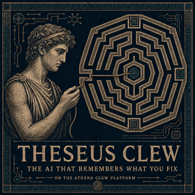
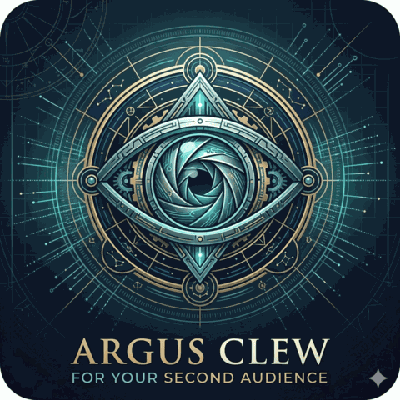

01
Occam's Razor
Solve one problem completely before adding the next. The simplest solution that ships beats the ambitious one that crashes.
§ 01 Identity
Tools that help systems explain themselves.
Built by L. Cordero, a court operations leader using AI to make complex systems more inspectable.
Santa Barbara, California
§ 02
I manage courtroom operations at Santa Barbara Superior Court. Ten years in courts, watching systems work, fail, and get blamed on the wrong thing. I started building AI tools in July 2025. I have not stopped.
The work is not weekend tutorials. It is deployed products solving real problems: developer growth tracked from actual code, reasoning preserved across fast moving AI builds, agent readiness scanning for the web's next audience, IT support transparency for people who deserve to know what is happening with their tickets.
I do not write code from scratch. I provide creative direction and validation. I work with AI tools, compare their outputs, choose the best pieces, and stitch them together into something that works. The AI generates. I direct. The output is mine. That is a deliberate workflow, not a limitation.
Every tool I build does the same structural thing.
It helps a system explain itself to the people who use it.
§ 03
Four principles, extracted from shipping. Not aspirational. Proven.
01
Solve one problem completely before adding the next. The simplest solution that ships beats the ambitious one that crashes.
02
Every component does one thing well. No Swiss Army knives.
03
Real integrations over mocked features. Production architecture over quick hacks. This is always a v1, not a final form.
04
Nine years in judicial systems means I know implementations have real world consequences. That instinct does not turn off.
The full set lives in BUILD PRINCIPLES.md on GitHub. Thirty eight principles. Pull what is useful.
§ 04
Named for the thread Ariadne gave Theseus to navigate the labyrinth and find his way back. A suite of tools for AI native builders who move fast and need infrastructure that keeps up. Each tool solves one problem completely. They are designed to work together, but they do not have to.
Start here
The clearest expression of the second audience idea: what AI agents experience when they try to use the web.
Evidence
Measures actual coding growth from shipped work so progress is visible, not self reported.
Memory
Preserves reasoning across fast AI assisted builds before the thread disappears.
Receipts
Audits documentation against code so claims stay in sync with evidence.

Agent readiness scanning for the web's next audience. Paste a URL or upload an OpenAPI spec. Get a unified report on what AI agents experience when they try to use your product. Frontend and API. Six categories each. Findings only, no fix suggestions. Methodology fully transparent and published.
AWS LambdaBedrockClaude Haiku 4.5DynamoDBReactTypeScript
Read more at agentislux.io →
You have shipped three projects in three months. You are definitely better, but can you prove it? Janus reads your actual code, measures complexity objectively, and exports proof you can share. Not vibes. Not self reporting. Evidence.
PythonFastAPIReactAWS AgentCore
github.com/earlgreyhot1701D/janus-clew →You build fast. You iterate messy. You lose track of why you made choices. Ariadne turns chaotic LLM chat sessions into structured clarity, capturing the aha moments, design tradeoffs, and code decisions that disappear when you move too fast for version control. Works with Claude, ChatGPT, DeepSeek, whatever you use.
PythonClaudeAWS Bedrock
github.com/earlgreyhot1701D/Ariadne-Clew →
You save a link while debugging a feature. Later, the link is still there, but the reason you saved it is gone. The context evaporates. Bookmarks do not remember why. Memoria does. Local first research memory that resurfaces what you saved when it becomes relevant again, with transparent reasoning. No black box magic.
TypeScriptFirebaseClaude
github.com/earlgreyhot1701D/memoria-clew →When you are learning to code, you hit this wall: the code does not feel clear. You paste snippets into AI tools and get long paragraphs that do not match what you are actually trying to understand. Metis shows you what it does, how it works, and why it was built that way. Validated through user research with career switchers. MVP shipped in 5 weeks.
TypeScriptSupabaseClaude
metis-clew.vercel.app →Most code feedback comes with judgment baked in. Lumen does not do that. Paste any public GitHub repo URL and get insights across code quality, dependency health, secret detection, and accessibility. Claude translates findings into plain English. Awareness, not shame. Reflection, not prescription.
TypeScriptReactClaude
lumenclew.lovable.app →
The web is about to get a second audience. AI agents cannot use most web apps. They cannot find buttons, fill forms, or navigate. They see a wall of styled divs and bounce. Hermes scans your HTML, JSX, and TSX files and tells you exactly what is broken. The proof of concept that became Perseus.
PythonClaudeGitLab Duo
github.com/earlgreyhot1701D/hermes-clew →
AI coding tools are powerful, but they are not inherently safe. Automation can modify sensitive files unintentionally, change configuration without context, and push large batches faster than meaningful human review can happen. Anton is a policy driven CLI that classifies file changes as DENY, NEEDS APPROVAL, or ALLOW before they land. Deterministic rules. No probabilistic guesses. No hallucinations.
TypeScriptCLI
github.com/earlgreyhot1701D/anton-clew →
A tiny tool to keep your receipts. Audits your README against your code. Verifies every claim. Documentation is a contract, code is evidence, truth in sync.
NodeCLIVitest
github.com/earlgreyhot1701D/readme-clew →IT support tickets are a black box. Customers do not know what is happening, why it is happening, or if the same issue will happen again next month. Real time visibility, AI powered explanations, smart solution tracking.
PythonClaudeAWS Bedrock
github.com/earlgreyhot1701D/ticketglass →
AI education is overwhelming. Thousands of courses. Most behind paywalls. Few personalized. Four questions, a personalized learning path from verified free resources, a PDF you keep forever. No signup. No data stored. Multi agent system on AWS serverless. Free, private, accessible to all.
PythonNext.jsAWS
clewdirective.com →
Autonomous debugging agent. Theseus uses deep thinking to analyze errors, search your debugging history, extract reusable principles, and resolve issues without you babysitting the process. Built on Gemini 3 for the Gemini Hackathon. Sometimes the best agent is one that finishes the work while you do something else.
JavaScriptGemini 3Autonomous Agents
github.com/earlgreyhot1701D/Athena-Clew →
Agent readiness review for AWS commits. Three copy paste prompts that help developers detect structural issues that make web apps hard for AI agents to interpret. Argus scans every commit via CodePipeline. Eyes everywhere, watching for what AI cannot read.
AWS CodePipelineBedrockPrompt Engineering
github.com/earlgreyhot1701D/argus-clew →Intelligent open source project discovery powered by Algolia Agent Studio. Answer four questions about what you want to learn and your skill level. Get GitHub projects with AI generated explanations for why each one fits. Built for the Algolia Agent Studio Challenge.
TypeScriptAlgolia Agent StudioGitHub API
github.com/earlgreyhot1701D/clew-quest →§ 05
Work at the intersection of courts, data, and people who deserve better tools.
AWS Textract on public court forms, with honest documentation of what it cannot do.
github →Explored automating Crystal Reports PDFs. The blocker was data quality, not Python. Sometimes the finding is the deliverable.
github →First pass data quality briefing agent for tabular datasets. Google AI Agents capstone.
github →AI powered cybersecurity awareness program for court staff. Built with Microsoft 365 Copilot, Claude, and NotebookLM. Three deliverables: phishing scenarios, training materials, and assessment tools. Won the Founderz AI Skills 4 Women Open Challenge.
github →§ 06
Range, range, range.
§ 07
Five wins in nine months. One pattern.
Every winning build does the same structural thing.
Takes something invisible and makes it inspectable.
§ 08
Long form essays at The Forum Files on Substack. Building notes, hackathon writeups, and reflections on AI assisted development at dev.to/earlgreyhot1701d.
Open to conversations with builders, civic tech folks, and anyone working on the gap between AI agents and humans.